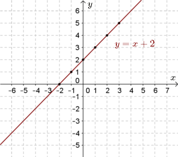

Narysuj wykres funkcji \(y = x + 2\).
Zaczynamy od wyznaczenia
kilku punktów należących do tego wykresu. Tworzymy przykładową tabelkę:
| \(x\) |
\(-2\) |
\(-1\) |
\(0\) |
\(1\) |
\(2\) |
\(3\) |
\(4\) |
| \(y=x+2\) |
\(0\) |
\(1\) |
\(2\) |
\(3\) |
\(4\) |
\(5\) |
\(6\) |
Zatem do wykresu tej funkcji należą takie punkty jak: \((-2, 0), (-1, 1),
(0, 2), (1, 3), (2, 4), (3, 5)\).
Zaznaczamy te punkty w układzie współrzędnych, a
następnie łączymy linią:  Przy
odpowiedniej wprawie nie trzeba, przed narysowaniem wykresu, tworzyć tabelki.
Wystarczy w
głowie wyznaczyć kilka punktów i zaznaczać je po kolei w układzie współrzędnych.